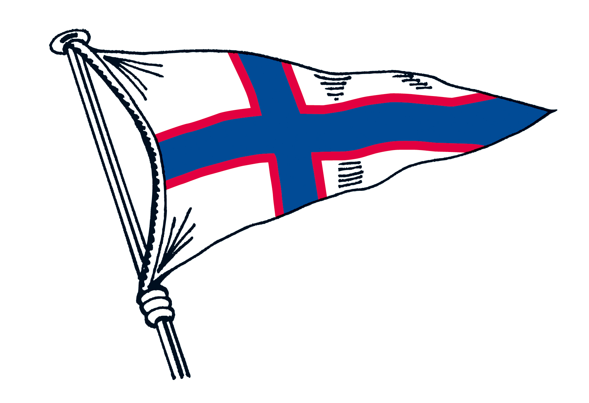

Toggle navigation
Home
Bootsklassen
Clubs
Anmeldung
Kontakt
Die Junioren können an allen Trainingsangeboten der drei Clubs teilnehmen. Dabei spielt es keine Rolle in welchem der drei Clubs sie Mitglied sind.
Segel-Club Enge
www.segelclubenge.ch/junioren
 Zürcher Yacht Club
www.zyc.ch
Zürcher Segel Club
www.z-s-c.ch/youth